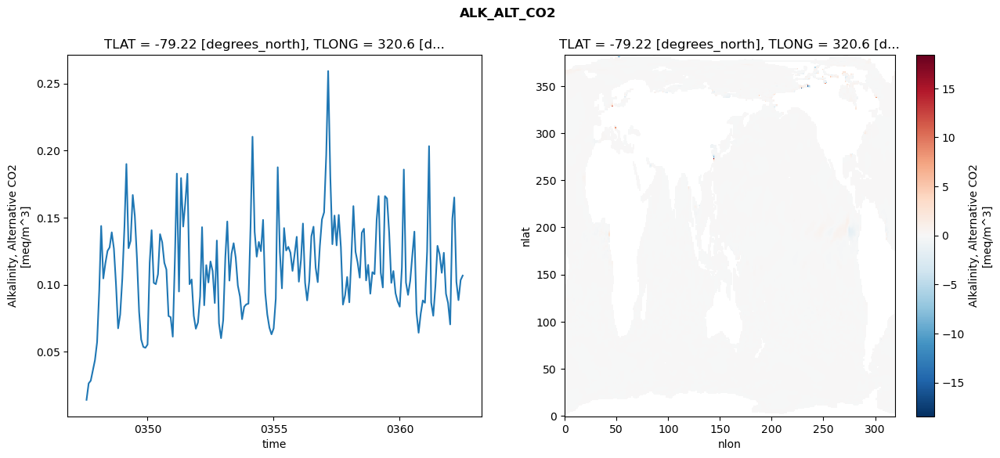
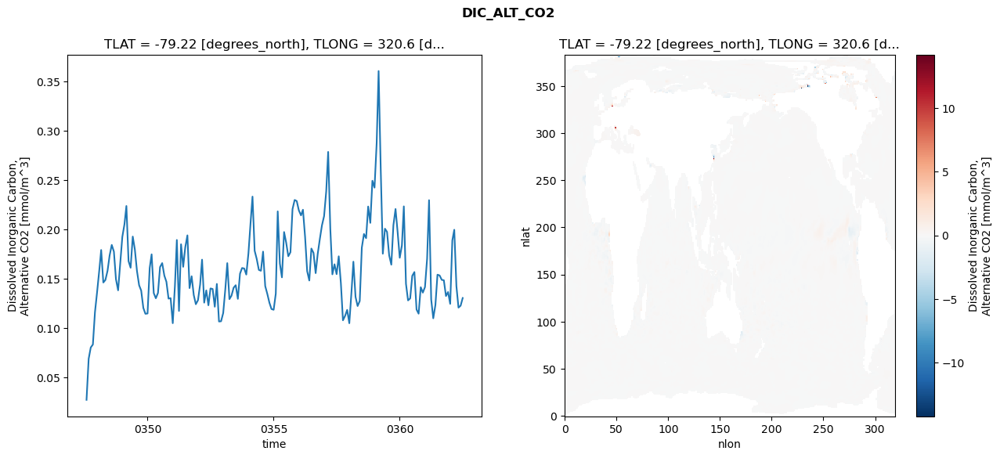
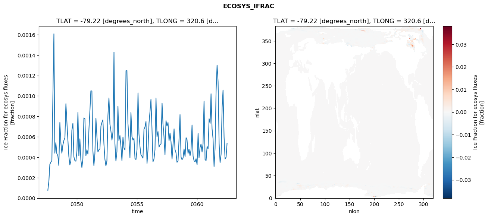
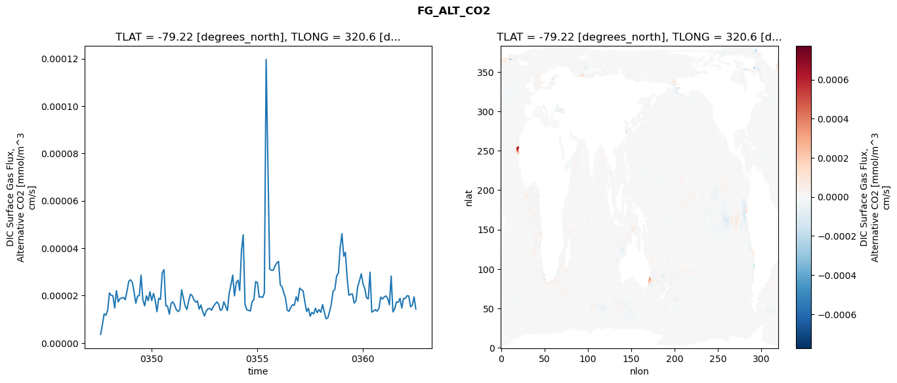

glb-dor_North_Atlantic_basin_034_1999-07-01_00138#
Simulation details#
Case: smyle.cdr-atlas-v0.glb-dor_North_Atlantic_basin_034_1999-07-01_00138.001
Basin: North_Atlantic_basin
Polygon: 34.0
Start date: 1999-07
Show code cell source Hide code cell source
import xarray as xr
import matplotlib.pyplot as plt
Show code cell source Hide code cell source
zarr_store = "/path/to/zarr/store"
# Parameters
zarr_store = "/global/cfs/projectdirs/m4746/Projects/Ocean-CDR-Atlas-v0/data/validation/smyle.cdr-atlas-v0.glb-dor_North_Atlantic_basin_034_1999-07-01_00138.001.validation.zarr"
Show code cell source Hide code cell source
%%time
ds_o = xr.open_zarr(zarr_store).compute()
ds_o
CPU times: user 651 ms, sys: 400 ms, total: 1.05 s
Wall time: 1.34 s
<xarray.Dataset> Size: 2MB
Dimensions: (nlat: 384, nlon: 320, time: 180)
Coordinates:
TLAT float64 8B -79.22
TLONG float64 8B 320.6
ULAT float64 8B -78.95
ULONG float64 8B 321.1
* time (time) object 1kB 0347-08-01 00:00:00 ... 0362-07-01 0...
z_t float32 4B 500.0
Dimensions without coordinates: nlat, nlon
Data variables:
ALK_ALT_CO2_diff (nlat, nlon) float32 492kB nan nan nan ... nan nan nan
ALK_ALT_CO2_rmse (time) float64 1kB 0.01407 0.02637 ... 0.1034 0.1067
DIC_ALT_CO2_diff (nlat, nlon) float32 492kB nan nan nan ... nan nan nan
DIC_ALT_CO2_rmse (time) float64 1kB 0.02714 0.06876 ... 0.1226 0.1304
ECOSYS_IFRAC_diff (nlat, nlon) float32 492kB nan nan nan ... nan nan nan
ECOSYS_IFRAC_rmse (time) float64 1kB 7.632e-05 0.0001657 ... 0.0005382
FG_ALT_CO2_diff (nlat, nlon) float32 492kB nan nan nan ... nan nan nan
FG_ALT_CO2_rmse (time) float64 1kB 3.603e-06 7.625e-06 ... 1.429e-05xarray.Dataset
- nlat: 384
- nlon: 320
- time: 180
- TLAT()float64-79.22
- long_name :
- array of t-grid latitudes
- units :
- degrees_north
array(-79.22052261)
- TLONG()float64320.6
- long_name :
- array of t-grid longitudes
- units :
- degrees_east
array(320.56250892)
- ULAT()float64-78.95
- long_name :
- array of u-grid latitudes
- units :
- degrees_north
array(-78.95289509)
- ULONG()float64321.1
- long_name :
- array of u-grid longitudes
- units :
- degrees_east
array(321.12500894)
- time(time)object0347-08-01 00:00:00 ... 0362-07-...
- bounds :
- time_bound
- long_name :
- time
array([cftime.DatetimeNoLeap(347, 8, 1, 0, 0, 0, 0, has_year_zero=True), cftime.DatetimeNoLeap(347, 9, 1, 0, 0, 0, 0, has_year_zero=True), cftime.DatetimeNoLeap(347, 10, 1, 0, 0, 0, 0, has_year_zero=True), cftime.DatetimeNoLeap(347, 11, 1, 0, 0, 0, 0, has_year_zero=True), cftime.DatetimeNoLeap(347, 12, 1, 0, 0, 0, 0, has_year_zero=True), cftime.DatetimeNoLeap(348, 1, 1, 0, 0, 0, 0, has_year_zero=True), cftime.DatetimeNoLeap(348, 2, 1, 0, 0, 0, 0, has_year_zero=True), cftime.DatetimeNoLeap(348, 3, 1, 0, 0, 0, 0, has_year_zero=True), cftime.DatetimeNoLeap(348, 4, 1, 0, 0, 0, 0, has_year_zero=True), cftime.DatetimeNoLeap(348, 5, 1, 0, 0, 0, 0, has_year_zero=True), cftime.DatetimeNoLeap(348, 6, 1, 0, 0, 0, 0, has_year_zero=True), cftime.DatetimeNoLeap(348, 7, 1, 0, 0, 0, 0, has_year_zero=True), cftime.DatetimeNoLeap(348, 8, 1, 0, 0, 0, 0, has_year_zero=True), cftime.DatetimeNoLeap(348, 9, 1, 0, 0, 0, 0, has_year_zero=True), cftime.DatetimeNoLeap(348, 10, 1, 0, 0, 0, 0, has_year_zero=True), cftime.DatetimeNoLeap(348, 11, 1, 0, 0, 0, 0, has_year_zero=True), cftime.DatetimeNoLeap(348, 12, 1, 0, 0, 0, 0, has_year_zero=True), cftime.DatetimeNoLeap(349, 1, 1, 0, 0, 0, 0, has_year_zero=True), cftime.DatetimeNoLeap(349, 2, 1, 0, 0, 0, 0, has_year_zero=True), cftime.DatetimeNoLeap(349, 3, 1, 0, 0, 0, 0, has_year_zero=True), cftime.DatetimeNoLeap(349, 4, 1, 0, 0, 0, 0, has_year_zero=True), cftime.DatetimeNoLeap(349, 5, 1, 0, 0, 0, 0, has_year_zero=True), cftime.DatetimeNoLeap(349, 6, 1, 0, 0, 0, 0, has_year_zero=True), cftime.DatetimeNoLeap(349, 7, 1, 0, 0, 0, 0, has_year_zero=True), cftime.DatetimeNoLeap(349, 8, 1, 0, 0, 0, 0, has_year_zero=True), cftime.DatetimeNoLeap(349, 9, 1, 0, 0, 0, 0, has_year_zero=True), cftime.DatetimeNoLeap(349, 10, 1, 0, 0, 0, 0, has_year_zero=True), cftime.DatetimeNoLeap(349, 11, 1, 0, 0, 0, 0, has_year_zero=True), cftime.DatetimeNoLeap(349, 12, 1, 0, 0, 0, 0, has_year_zero=True), cftime.DatetimeNoLeap(350, 1, 1, 0, 0, 0, 0, has_year_zero=True), cftime.DatetimeNoLeap(350, 2, 1, 0, 0, 0, 0, has_year_zero=True), cftime.DatetimeNoLeap(350, 3, 1, 0, 0, 0, 0, has_year_zero=True), cftime.DatetimeNoLeap(350, 4, 1, 0, 0, 0, 0, has_year_zero=True), cftime.DatetimeNoLeap(350, 5, 1, 0, 0, 0, 0, has_year_zero=True), cftime.DatetimeNoLeap(350, 6, 1, 0, 0, 0, 0, has_year_zero=True), cftime.DatetimeNoLeap(350, 7, 1, 0, 0, 0, 0, has_year_zero=True), cftime.DatetimeNoLeap(350, 8, 1, 0, 0, 0, 0, has_year_zero=True), cftime.DatetimeNoLeap(350, 9, 1, 0, 0, 0, 0, has_year_zero=True), cftime.DatetimeNoLeap(350, 10, 1, 0, 0, 0, 0, has_year_zero=True), cftime.DatetimeNoLeap(350, 11, 1, 0, 0, 0, 0, has_year_zero=True), cftime.DatetimeNoLeap(350, 12, 1, 0, 0, 0, 0, has_year_zero=True), cftime.DatetimeNoLeap(351, 1, 1, 0, 0, 0, 0, has_year_zero=True), cftime.DatetimeNoLeap(351, 2, 1, 0, 0, 0, 0, has_year_zero=True), cftime.DatetimeNoLeap(351, 3, 1, 0, 0, 0, 0, has_year_zero=True), cftime.DatetimeNoLeap(351, 4, 1, 0, 0, 0, 0, has_year_zero=True), cftime.DatetimeNoLeap(351, 5, 1, 0, 0, 0, 0, has_year_zero=True), cftime.DatetimeNoLeap(351, 6, 1, 0, 0, 0, 0, has_year_zero=True), cftime.DatetimeNoLeap(351, 7, 1, 0, 0, 0, 0, has_year_zero=True), cftime.DatetimeNoLeap(351, 8, 1, 0, 0, 0, 0, has_year_zero=True), cftime.DatetimeNoLeap(351, 9, 1, 0, 0, 0, 0, has_year_zero=True), cftime.DatetimeNoLeap(351, 10, 1, 0, 0, 0, 0, has_year_zero=True), cftime.DatetimeNoLeap(351, 11, 1, 0, 0, 0, 0, has_year_zero=True), cftime.DatetimeNoLeap(351, 12, 1, 0, 0, 0, 0, has_year_zero=True), cftime.DatetimeNoLeap(352, 1, 1, 0, 0, 0, 0, has_year_zero=True), cftime.DatetimeNoLeap(352, 2, 1, 0, 0, 0, 0, has_year_zero=True), cftime.DatetimeNoLeap(352, 3, 1, 0, 0, 0, 0, has_year_zero=True), cftime.DatetimeNoLeap(352, 4, 1, 0, 0, 0, 0, has_year_zero=True), cftime.DatetimeNoLeap(352, 5, 1, 0, 0, 0, 0, has_year_zero=True), cftime.DatetimeNoLeap(352, 6, 1, 0, 0, 0, 0, has_year_zero=True), cftime.DatetimeNoLeap(352, 7, 1, 0, 0, 0, 0, has_year_zero=True), cftime.DatetimeNoLeap(352, 8, 1, 0, 0, 0, 0, has_year_zero=True), cftime.DatetimeNoLeap(352, 9, 1, 0, 0, 0, 0, has_year_zero=True), cftime.DatetimeNoLeap(352, 10, 1, 0, 0, 0, 0, has_year_zero=True), cftime.DatetimeNoLeap(352, 11, 1, 0, 0, 0, 0, has_year_zero=True), cftime.DatetimeNoLeap(352, 12, 1, 0, 0, 0, 0, has_year_zero=True), cftime.DatetimeNoLeap(353, 1, 1, 0, 0, 0, 0, has_year_zero=True), cftime.DatetimeNoLeap(353, 2, 1, 0, 0, 0, 0, has_year_zero=True), cftime.DatetimeNoLeap(353, 3, 1, 0, 0, 0, 0, has_year_zero=True), cftime.DatetimeNoLeap(353, 4, 1, 0, 0, 0, 0, has_year_zero=True), cftime.DatetimeNoLeap(353, 5, 1, 0, 0, 0, 0, has_year_zero=True), cftime.DatetimeNoLeap(353, 6, 1, 0, 0, 0, 0, has_year_zero=True), cftime.DatetimeNoLeap(353, 7, 1, 0, 0, 0, 0, has_year_zero=True), cftime.DatetimeNoLeap(353, 8, 1, 0, 0, 0, 0, has_year_zero=True), cftime.DatetimeNoLeap(353, 9, 1, 0, 0, 0, 0, has_year_zero=True), cftime.DatetimeNoLeap(353, 10, 1, 0, 0, 0, 0, has_year_zero=True), cftime.DatetimeNoLeap(353, 11, 1, 0, 0, 0, 0, has_year_zero=True), cftime.DatetimeNoLeap(353, 12, 1, 0, 0, 0, 0, has_year_zero=True), cftime.DatetimeNoLeap(354, 1, 1, 0, 0, 0, 0, has_year_zero=True), cftime.DatetimeNoLeap(354, 2, 1, 0, 0, 0, 0, has_year_zero=True), cftime.DatetimeNoLeap(354, 3, 1, 0, 0, 0, 0, has_year_zero=True), cftime.DatetimeNoLeap(354, 4, 1, 0, 0, 0, 0, has_year_zero=True), cftime.DatetimeNoLeap(354, 5, 1, 0, 0, 0, 0, has_year_zero=True), cftime.DatetimeNoLeap(354, 6, 1, 0, 0, 0, 0, has_year_zero=True), cftime.DatetimeNoLeap(354, 7, 1, 0, 0, 0, 0, has_year_zero=True), cftime.DatetimeNoLeap(354, 8, 1, 0, 0, 0, 0, has_year_zero=True), cftime.DatetimeNoLeap(354, 9, 1, 0, 0, 0, 0, has_year_zero=True), cftime.DatetimeNoLeap(354, 10, 1, 0, 0, 0, 0, has_year_zero=True), cftime.DatetimeNoLeap(354, 11, 1, 0, 0, 0, 0, has_year_zero=True), cftime.DatetimeNoLeap(354, 12, 1, 0, 0, 0, 0, has_year_zero=True), cftime.DatetimeNoLeap(355, 1, 1, 0, 0, 0, 0, has_year_zero=True), cftime.DatetimeNoLeap(355, 2, 1, 0, 0, 0, 0, has_year_zero=True), cftime.DatetimeNoLeap(355, 3, 1, 0, 0, 0, 0, has_year_zero=True), cftime.DatetimeNoLeap(355, 4, 1, 0, 0, 0, 0, has_year_zero=True), cftime.DatetimeNoLeap(355, 5, 1, 0, 0, 0, 0, has_year_zero=True), cftime.DatetimeNoLeap(355, 6, 1, 0, 0, 0, 0, has_year_zero=True), cftime.DatetimeNoLeap(355, 7, 1, 0, 0, 0, 0, has_year_zero=True), cftime.DatetimeNoLeap(355, 8, 1, 0, 0, 0, 0, has_year_zero=True), cftime.DatetimeNoLeap(355, 9, 1, 0, 0, 0, 0, has_year_zero=True), cftime.DatetimeNoLeap(355, 10, 1, 0, 0, 0, 0, has_year_zero=True), cftime.DatetimeNoLeap(355, 11, 1, 0, 0, 0, 0, has_year_zero=True), cftime.DatetimeNoLeap(355, 12, 1, 0, 0, 0, 0, has_year_zero=True), cftime.DatetimeNoLeap(356, 1, 1, 0, 0, 0, 0, has_year_zero=True), cftime.DatetimeNoLeap(356, 2, 1, 0, 0, 0, 0, has_year_zero=True), cftime.DatetimeNoLeap(356, 3, 1, 0, 0, 0, 0, has_year_zero=True), cftime.DatetimeNoLeap(356, 4, 1, 0, 0, 0, 0, has_year_zero=True), cftime.DatetimeNoLeap(356, 5, 1, 0, 0, 0, 0, has_year_zero=True), cftime.DatetimeNoLeap(356, 6, 1, 0, 0, 0, 0, has_year_zero=True), cftime.DatetimeNoLeap(356, 7, 1, 0, 0, 0, 0, has_year_zero=True), cftime.DatetimeNoLeap(356, 8, 1, 0, 0, 0, 0, has_year_zero=True), cftime.DatetimeNoLeap(356, 9, 1, 0, 0, 0, 0, has_year_zero=True), cftime.DatetimeNoLeap(356, 10, 1, 0, 0, 0, 0, has_year_zero=True), cftime.DatetimeNoLeap(356, 11, 1, 0, 0, 0, 0, has_year_zero=True), cftime.DatetimeNoLeap(356, 12, 1, 0, 0, 0, 0, has_year_zero=True), cftime.DatetimeNoLeap(357, 1, 1, 0, 0, 0, 0, has_year_zero=True), cftime.DatetimeNoLeap(357, 2, 1, 0, 0, 0, 0, has_year_zero=True), cftime.DatetimeNoLeap(357, 3, 1, 0, 0, 0, 0, has_year_zero=True), cftime.DatetimeNoLeap(357, 4, 1, 0, 0, 0, 0, has_year_zero=True), cftime.DatetimeNoLeap(357, 5, 1, 0, 0, 0, 0, has_year_zero=True), cftime.DatetimeNoLeap(357, 6, 1, 0, 0, 0, 0, has_year_zero=True), cftime.DatetimeNoLeap(357, 7, 1, 0, 0, 0, 0, has_year_zero=True), cftime.DatetimeNoLeap(357, 8, 1, 0, 0, 0, 0, has_year_zero=True), cftime.DatetimeNoLeap(357, 9, 1, 0, 0, 0, 0, has_year_zero=True), cftime.DatetimeNoLeap(357, 10, 1, 0, 0, 0, 0, has_year_zero=True), cftime.DatetimeNoLeap(357, 11, 1, 0, 0, 0, 0, has_year_zero=True), cftime.DatetimeNoLeap(357, 12, 1, 0, 0, 0, 0, has_year_zero=True), cftime.DatetimeNoLeap(358, 1, 1, 0, 0, 0, 0, has_year_zero=True), cftime.DatetimeNoLeap(358, 2, 1, 0, 0, 0, 0, has_year_zero=True), cftime.DatetimeNoLeap(358, 3, 1, 0, 0, 0, 0, has_year_zero=True), cftime.DatetimeNoLeap(358, 4, 1, 0, 0, 0, 0, has_year_zero=True), cftime.DatetimeNoLeap(358, 5, 1, 0, 0, 0, 0, has_year_zero=True), cftime.DatetimeNoLeap(358, 6, 1, 0, 0, 0, 0, has_year_zero=True), cftime.DatetimeNoLeap(358, 7, 1, 0, 0, 0, 0, has_year_zero=True), cftime.DatetimeNoLeap(358, 8, 1, 0, 0, 0, 0, has_year_zero=True), cftime.DatetimeNoLeap(358, 9, 1, 0, 0, 0, 0, has_year_zero=True), cftime.DatetimeNoLeap(358, 10, 1, 0, 0, 0, 0, has_year_zero=True), cftime.DatetimeNoLeap(358, 11, 1, 0, 0, 0, 0, has_year_zero=True), cftime.DatetimeNoLeap(358, 12, 1, 0, 0, 0, 0, has_year_zero=True), cftime.DatetimeNoLeap(359, 1, 1, 0, 0, 0, 0, has_year_zero=True), cftime.DatetimeNoLeap(359, 2, 1, 0, 0, 0, 0, has_year_zero=True), cftime.DatetimeNoLeap(359, 3, 1, 0, 0, 0, 0, has_year_zero=True), cftime.DatetimeNoLeap(359, 4, 1, 0, 0, 0, 0, has_year_zero=True), cftime.DatetimeNoLeap(359, 5, 1, 0, 0, 0, 0, has_year_zero=True), cftime.DatetimeNoLeap(359, 6, 1, 0, 0, 0, 0, has_year_zero=True), cftime.DatetimeNoLeap(359, 7, 1, 0, 0, 0, 0, has_year_zero=True), cftime.DatetimeNoLeap(359, 8, 1, 0, 0, 0, 0, has_year_zero=True), cftime.DatetimeNoLeap(359, 9, 1, 0, 0, 0, 0, has_year_zero=True), cftime.DatetimeNoLeap(359, 10, 1, 0, 0, 0, 0, has_year_zero=True), cftime.DatetimeNoLeap(359, 11, 1, 0, 0, 0, 0, has_year_zero=True), cftime.DatetimeNoLeap(359, 12, 1, 0, 0, 0, 0, has_year_zero=True), cftime.DatetimeNoLeap(360, 1, 1, 0, 0, 0, 0, has_year_zero=True), cftime.DatetimeNoLeap(360, 2, 1, 0, 0, 0, 0, has_year_zero=True), cftime.DatetimeNoLeap(360, 3, 1, 0, 0, 0, 0, has_year_zero=True), cftime.DatetimeNoLeap(360, 4, 1, 0, 0, 0, 0, has_year_zero=True), cftime.DatetimeNoLeap(360, 5, 1, 0, 0, 0, 0, has_year_zero=True), cftime.DatetimeNoLeap(360, 6, 1, 0, 0, 0, 0, has_year_zero=True), cftime.DatetimeNoLeap(360, 7, 1, 0, 0, 0, 0, has_year_zero=True), cftime.DatetimeNoLeap(360, 8, 1, 0, 0, 0, 0, has_year_zero=True), cftime.DatetimeNoLeap(360, 9, 1, 0, 0, 0, 0, has_year_zero=True), cftime.DatetimeNoLeap(360, 10, 1, 0, 0, 0, 0, has_year_zero=True), cftime.DatetimeNoLeap(360, 11, 1, 0, 0, 0, 0, has_year_zero=True), cftime.DatetimeNoLeap(360, 12, 1, 0, 0, 0, 0, has_year_zero=True), cftime.DatetimeNoLeap(361, 1, 1, 0, 0, 0, 0, has_year_zero=True), cftime.DatetimeNoLeap(361, 2, 1, 0, 0, 0, 0, has_year_zero=True), cftime.DatetimeNoLeap(361, 3, 1, 0, 0, 0, 0, has_year_zero=True), cftime.DatetimeNoLeap(361, 4, 1, 0, 0, 0, 0, has_year_zero=True), cftime.DatetimeNoLeap(361, 5, 1, 0, 0, 0, 0, has_year_zero=True), cftime.DatetimeNoLeap(361, 6, 1, 0, 0, 0, 0, has_year_zero=True), cftime.DatetimeNoLeap(361, 7, 1, 0, 0, 0, 0, has_year_zero=True), cftime.DatetimeNoLeap(361, 8, 1, 0, 0, 0, 0, has_year_zero=True), cftime.DatetimeNoLeap(361, 9, 1, 0, 0, 0, 0, has_year_zero=True), cftime.DatetimeNoLeap(361, 10, 1, 0, 0, 0, 0, has_year_zero=True), cftime.DatetimeNoLeap(361, 11, 1, 0, 0, 0, 0, has_year_zero=True), cftime.DatetimeNoLeap(361, 12, 1, 0, 0, 0, 0, has_year_zero=True), cftime.DatetimeNoLeap(362, 1, 1, 0, 0, 0, 0, has_year_zero=True), cftime.DatetimeNoLeap(362, 2, 1, 0, 0, 0, 0, has_year_zero=True), cftime.DatetimeNoLeap(362, 3, 1, 0, 0, 0, 0, has_year_zero=True), cftime.DatetimeNoLeap(362, 4, 1, 0, 0, 0, 0, has_year_zero=True), cftime.DatetimeNoLeap(362, 5, 1, 0, 0, 0, 0, has_year_zero=True), cftime.DatetimeNoLeap(362, 6, 1, 0, 0, 0, 0, has_year_zero=True), cftime.DatetimeNoLeap(362, 7, 1, 0, 0, 0, 0, has_year_zero=True)], dtype=object) - z_t()float32500.0
- long_name :
- depth from surface to midpoint of layer
- positive :
- down
- units :
- centimeters
- valid_max :
- 537500.0
- valid_min :
- 500.0
array(500., dtype=float32)
- ALK_ALT_CO2_diff(nlat, nlon)float32nan nan nan nan ... nan nan nan nan
- cell_methods :
- time: mean
- grid_loc :
- 3111
- long_name :
- Alkalinity, Alternative CO2
- units :
- meq/m^3
array([[ nan, nan, nan, ..., nan, nan, nan], [ nan, nan, nan, ..., nan, nan, nan], [ 0.00415039, -0.00146484, 0.01318359, ..., nan, nan, nan], ..., [ nan, nan, nan, ..., nan, nan, nan], [ nan, nan, nan, ..., nan, nan, nan], [ nan, nan, nan, ..., nan, nan, nan]], dtype=float32) - ALK_ALT_CO2_rmse(time)float640.01407 0.02637 ... 0.1034 0.1067
- cell_methods :
- time: mean
- grid_loc :
- 3111
- long_name :
- Alkalinity, Alternative CO2
- units :
- meq/m^3
array([0.01407025, 0.02636966, 0.02834328, 0.03618233, 0.04366564, 0.05713688, 0.09567611, 0.14370791, 0.10459267, 0.11595323, 0.12514903, 0.1277138 , 0.13895769, 0.12693053, 0.10068758, 0.06740397, 0.07767168, 0.10464718, 0.143222 , 0.18988173, 0.1271637 , 0.13260389, 0.16679894, 0.15119273, 0.11943449, 0.07972855, 0.05904621, 0.05355373, 0.05287555, 0.05527786, 0.11625986, 0.14052816, 0.10131612, 0.1003306 , 0.10766451, 0.13757189, 0.13161799, 0.11628722, 0.11120548, 0.07656838, 0.07572338, 0.0611747 , 0.11931678, 0.18275364, 0.09482962, 0.17942625, 0.1432749 , 0.16071725, 0.18263764, 0.10028126, 0.10385072, 0.07673484, 0.06710378, 0.07182239, 0.09128123, 0.14281281, 0.08458101, 0.11449827, 0.10160864, 0.11721527, 0.11012593, 0.08627173, 0.13284185, 0.07109731, 0.06005513, 0.0735208 , 0.12058355, 0.1470436 , 0.10298157, 0.12296397, 0.13085417, 0.12007083, 0.09921533, 0.09105265, 0.07420349, 0.08349563, 0.08525964, 0.0857823 , 0.14372103, 0.21023415, 0.13932484, 0.12083901, 0.13181354, 0.12491728, 0.14824237, 0.09408985, 0.07769728, 0.06782183, 0.06292616, 0.06732012, 0.08954431, 0.18748073, 0.12426882, 0.09719534, 0.14214374, 0.12542844, 0.12817235, 0.12382271, 0.11023267, 0.12283694, 0.13562318, 0.10216982, 0.11866744, 0.14552624, 0.10133218, 0.08820877, 0.10276021, 0.13610394, 0.14315752, 0.11261911, 0.10184198, 0.12896685, 0.14857783, 0.15387016, 0.19659349, 0.25922012, 0.18067791, 0.13009715, 0.15148208, 0.1292499 , 0.15192837, 0.12799281, 0.08511464, 0.09211976, 0.1056787 , 0.0868013 , 0.12212607, 0.15851167, 0.12443315, 0.11655619, 0.10517507, 0.13866544, 0.14163348, 0.10310721, 0.11471436, 0.09323409, 0.10927884, 0.1078112 , 0.14849362, 0.16600776, 0.10891634, 0.09786659, 0.16595224, 0.16415365, 0.13855531, 0.10129202, 0.11009309, 0.09354187, 0.08745603, 0.08351742, 0.1126751 , 0.18577999, 0.10150587, 0.09234965, 0.10272128, 0.12125615, 0.13949519, 0.07885028, 0.06411372, 0.0785116 , 0.08817464, 0.08643514, 0.12471478, 0.20321946, 0.08656942, 0.07676009, 0.09888891, 0.1288878 , 0.12251278, 0.10878226, 0.1237194 , 0.0931598 , 0.08631943, 0.07031545, 0.14887576, 0.16494865, 0.10199513, 0.08841909, 0.103355 , 0.10670624]) - DIC_ALT_CO2_diff(nlat, nlon)float32nan nan nan nan ... nan nan nan nan
- cell_methods :
- time: mean
- grid_loc :
- 3111
- long_name :
- Dissolved Inorganic Carbon, Alternative CO2
- units :
- mmol/m^3
array([[ nan, nan, nan, ..., nan, nan, nan], [ nan, nan, nan, ..., nan, nan, nan], [ 0. , -0.00097656, 0.00708008, ..., nan, nan, nan], ..., [ nan, nan, nan, ..., nan, nan, nan], [ nan, nan, nan, ..., nan, nan, nan], [ nan, nan, nan, ..., nan, nan, nan]], dtype=float32) - DIC_ALT_CO2_rmse(time)float640.02714 0.06876 ... 0.1226 0.1304
- cell_methods :
- time: mean
- grid_loc :
- 3111
- long_name :
- Dissolved Inorganic Carbon, Alternative CO2
- units :
- mmol/m^3
array([0.02714063, 0.06876215, 0.08019469, 0.08325644, 0.11596449, 0.1364797 , 0.15811991, 0.17906638, 0.14609908, 0.14866201, 0.15796457, 0.17339571, 0.18421027, 0.17746617, 0.14939584, 0.13818138, 0.16497565, 0.19234285, 0.20517359, 0.22367593, 0.16776582, 0.16105002, 0.19267126, 0.17981424, 0.15775688, 0.14333564, 0.13791933, 0.12035166, 0.11438838, 0.11468555, 0.16082281, 0.1746587 , 0.13534907, 0.13012121, 0.13551592, 0.16178475, 0.16577613, 0.15312258, 0.14684364, 0.12974936, 0.13025405, 0.10485082, 0.14236852, 0.1892266 , 0.1172632 , 0.18484774, 0.16201411, 0.18187504, 0.19389293, 0.1404454 , 0.15243122, 0.13331568, 0.12408311, 0.12818073, 0.14411677, 0.16925831, 0.12568783, 0.13811702, 0.12301213, 0.14007736, 0.13953175, 0.12155542, 0.14466406, 0.10656325, 0.10680332, 0.11517529, 0.1397839 , 0.16574593, 0.12922922, 0.13277216, 0.14087105, 0.14335952, 0.12953538, 0.15503538, 0.16078878, 0.16031784, 0.15413743, 0.17553087, 0.2067348 , 0.23318945, 0.17829085, 0.17001992, 0.15887244, 0.1579795 , 0.1774111 , 0.14246433, 0.13464863, 0.12553572, 0.1191764 , 0.11844882, 0.13483489, 0.21820546, 0.16532178, 0.15132616, 0.1972559 , 0.18666631, 0.17274072, 0.17675006, 0.22044495, 0.22978647, 0.22868196, 0.21917738, 0.21416843, 0.21988582, 0.19231461, 0.15760706, 0.1481371 , 0.18054137, 0.17613451, 0.15560629, 0.17523937, 0.19043443, 0.20397296, 0.21342986, 0.23862603, 0.27849221, 0.20064261, 0.15438611, 0.16457991, 0.15459543, 0.17265513, 0.1454246 , 0.10777131, 0.11227806, 0.11833686, 0.10481804, 0.13608641, 0.16720437, 0.1315736 , 0.12224471, 0.12732648, 0.18145078, 0.19529539, 0.19103667, 0.22313451, 0.20655682, 0.24929314, 0.24227331, 0.28739564, 0.36049019, 0.26017158, 0.17530388, 0.20064494, 0.19740452, 0.17353306, 0.1642024 , 0.20413115, 0.22061285, 0.19744711, 0.17119905, 0.18356167, 0.22328111, 0.14480799, 0.12796604, 0.12998727, 0.15286849, 0.15671269, 0.11871321, 0.11449043, 0.1413428 , 0.13582861, 0.14146027, 0.17027519, 0.2295584 , 0.12896644, 0.10983188, 0.12330974, 0.15404244, 0.15324209, 0.14877399, 0.14839001, 0.13238584, 0.13646387, 0.12446679, 0.18884363, 0.19955593, 0.14240424, 0.12065074, 0.12261884, 0.13038761]) - ECOSYS_IFRAC_diff(nlat, nlon)float32nan nan nan nan ... nan nan nan nan
- cell_methods :
- time: mean
- grid_loc :
- 2110
- long_name :
- Ice Fraction for ecosys fluxes
- units :
- fraction
array([[ nan, nan, nan, ..., nan, nan, nan], [ nan, nan, nan, ..., nan, nan, nan], [1.1086464e-05, 6.8068504e-05, 2.3126602e-05, ..., nan, nan, nan], ..., [ nan, nan, nan, ..., nan, nan, nan], [ nan, nan, nan, ..., nan, nan, nan], [ nan, nan, nan, ..., nan, nan, nan]], dtype=float32) - ECOSYS_IFRAC_rmse(time)float647.632e-05 0.0001657 ... 0.0005382
- cell_methods :
- time: mean
- grid_loc :
- 2110
- long_name :
- Ice Fraction for ecosys fluxes
- units :
- fraction
array([7.63191456e-05, 1.65701749e-04, 3.30338873e-04, 3.52966094e-04, 3.66845888e-04, 9.79747199e-04, 1.60801576e-03, 4.40218832e-04, 5.41986457e-04, 4.35102853e-04, 4.14687158e-04, 3.19773746e-04, 7.39747479e-04, 5.39899425e-04, 4.39939211e-04, 5.20779270e-04, 5.64455061e-04, 5.88847209e-04, 9.24029716e-04, 7.51954222e-04, 5.72335795e-04, 4.09670124e-04, 3.24528725e-04, 3.64420671e-04, 6.64258506e-04, 7.31214286e-04, 4.04007431e-04, 3.66592362e-04, 3.61011389e-04, 4.60687967e-04, 8.38381494e-04, 4.13566209e-04, 5.80598950e-04, 3.72676263e-04, 3.00256607e-04, 3.83169899e-04, 7.84736599e-04, 7.76932886e-04, 4.15820682e-04, 4.74213194e-04, 4.30719727e-04, 6.72912707e-04, 8.63534837e-04, 1.05006638e-03, 1.04853624e-03, 4.62138261e-04, 3.18497979e-04, 4.35410914e-04, 7.82975399e-04, 6.01206076e-04, 4.51989190e-04, 4.72541899e-04, 4.82943130e-04, 7.06162303e-04, 7.42142741e-04, 7.66166789e-04, 5.33069453e-04, 3.81367052e-04, 3.15171143e-04, 3.64087688e-04, 8.05635612e-04, 9.80476022e-04, 7.23065805e-04, 6.53460587e-04, 5.67881514e-04, 6.48138147e-04, 1.42802614e-03, 5.35416245e-04, 3.63369591e-04, 4.55458113e-04, 8.98755374e-04, 5.63003769e-04, 6.12356962e-04, 5.02898834e-04, 3.67278464e-04, 5.98077307e-04, 4.89574866e-04, 4.70897684e-04, 1.24660968e-03, 1.24870138e-03, ... 4.74431863e-04, 7.34383239e-04, 8.50565512e-04, 9.66102646e-04, 6.81644020e-04, 3.55320148e-04, 3.82479755e-04, 4.72918939e-04, 9.79898803e-04, 5.98882108e-04, 6.51649971e-04, 4.99357941e-04, 5.24108996e-04, 5.29747121e-04, 9.29905114e-04, 7.27700133e-04, 6.01941825e-04, 4.24191389e-04, 7.57713452e-04, 7.04340793e-04, 7.39728621e-04, 5.61999180e-04, 6.37681948e-04, 5.48292357e-04, 3.82187030e-04, 5.24573262e-04, 6.78222608e-04, 4.74980174e-04, 4.43819438e-04, 3.50518810e-04, 3.63997321e-04, 5.64245924e-04, 8.17632446e-04, 4.00356763e-04, 3.76178884e-04, 3.91798910e-04, 4.81884931e-04, 4.06946750e-04, 5.91469968e-04, 5.72588456e-04, 4.37180610e-04, 4.80329108e-04, 4.14360017e-04, 4.69839607e-04, 7.15384147e-04, 4.11348532e-04, 3.66312178e-04, 3.55161702e-04, 3.85944482e-04, 3.28123338e-04, 6.33795979e-04, 3.94836589e-04, 4.95693175e-04, 5.29325055e-04, 4.50934045e-04, 5.30236348e-04, 9.49427072e-04, 3.77219486e-04, 3.67571730e-04, 5.05946460e-04, 4.82269075e-04, 7.77103026e-04, 7.31844753e-04, 1.02137547e-03, 6.79089117e-04, 5.82215092e-04, 3.09057031e-04, 4.87851144e-04, 1.04592713e-03, 1.30137656e-03, 1.13863838e-03, 5.36560623e-04, 3.48487733e-04, 4.31569822e-04, 8.88279725e-04, 1.05723189e-03, 5.98520307e-04, 3.82913725e-04, 4.00171093e-04, 5.38205939e-04]) - FG_ALT_CO2_diff(nlat, nlon)float32nan nan nan nan ... nan nan nan nan
- cell_methods :
- time: mean
- grid_loc :
- 2110
- long_name :
- DIC Surface Gas Flux, Alternative CO2
- units :
- mmol/m^3 cm/s
array([[ nan, nan, nan, ..., nan, nan, nan], [ nan, nan, nan, ..., nan, nan, nan], [-5.5539999e-09, -2.7409669e-08, -6.8951778e-09, ..., nan, nan, nan], ..., [ nan, nan, nan, ..., nan, nan, nan], [ nan, nan, nan, ..., nan, nan, nan], [ nan, nan, nan, ..., nan, nan, nan]], dtype=float32) - FG_ALT_CO2_rmse(time)float643.603e-06 7.625e-06 ... 1.429e-05
- cell_methods :
- time: mean
- grid_loc :
- 2110
- long_name :
- DIC Surface Gas Flux, Alternative CO2
- units :
- mmol/m^3 cm/s
array([3.60309571e-06, 7.62453280e-06, 1.22644316e-05, 1.16972647e-05, 1.37610582e-05, 2.10965057e-05, 2.00560641e-05, 1.99550944e-05, 1.47213106e-05, 2.20602550e-05, 1.72963069e-05, 1.87034988e-05, 1.89301501e-05, 1.91885039e-05, 1.81871561e-05, 2.20570649e-05, 2.60356465e-05, 2.66590136e-05, 2.54603612e-05, 2.15665224e-05, 1.67547413e-05, 1.97222373e-05, 2.00248895e-05, 2.86201494e-05, 1.81295750e-05, 1.56132073e-05, 1.98956945e-05, 1.77995821e-05, 2.15858436e-05, 1.78828078e-05, 2.08812208e-05, 1.81278865e-05, 1.31903563e-05, 1.88442403e-05, 1.83641987e-05, 2.95435423e-05, 3.08997559e-05, 1.56763018e-05, 1.55115326e-05, 1.21629054e-05, 1.66430957e-05, 1.72986914e-05, 1.58855519e-05, 1.40814021e-05, 1.32161581e-05, 1.40640902e-05, 2.24148554e-05, 1.89949994e-05, 1.55688696e-05, 1.41269381e-05, 1.77926910e-05, 2.05371189e-05, 1.99197788e-05, 1.81489484e-05, 1.72168993e-05, 1.76730758e-05, 1.42571631e-05, 1.59819290e-05, 1.31243526e-05, 1.13733136e-05, 1.35283275e-05, 1.44113747e-05, 1.45509563e-05, 1.38173460e-05, 1.53902702e-05, 1.64272548e-05, 1.72611639e-05, 1.65130989e-05, 1.37380350e-05, 1.41478441e-05, 1.73903747e-05, 1.53870910e-05, 1.36272744e-05, 2.09747495e-05, 2.44659089e-05, 2.86121838e-05, 1.98829166e-05, 2.55138938e-05, 2.64608128e-05, 2.21420276e-05, ... 3.37222774e-05, 3.44117319e-05, 2.44132401e-05, 2.37769679e-05, 2.12250280e-05, 1.89592174e-05, 1.37744647e-05, 1.33250094e-05, 1.50529458e-05, 1.61415426e-05, 1.58476143e-05, 1.94882496e-05, 1.75934244e-05, 2.31375452e-05, 2.24149700e-05, 2.19775761e-05, 1.72465180e-05, 1.32635259e-05, 1.46476890e-05, 1.12398369e-05, 1.28906044e-05, 1.22530157e-05, 1.46451229e-05, 1.27427437e-05, 1.40622504e-05, 1.29275971e-05, 1.61674962e-05, 1.32563362e-05, 1.01987862e-05, 1.05070377e-05, 1.31009614e-05, 1.63662036e-05, 2.18047122e-05, 2.25574262e-05, 2.83063544e-05, 2.94200284e-05, 4.00175184e-05, 4.60844750e-05, 3.65891091e-05, 3.82226789e-05, 2.74769048e-05, 2.01247134e-05, 2.05439514e-05, 2.06434213e-05, 1.67842264e-05, 1.78109506e-05, 2.38083048e-05, 2.64026510e-05, 2.91559361e-05, 2.48715754e-05, 2.28358800e-05, 1.90668095e-05, 1.85478405e-05, 2.98459260e-05, 1.29781032e-05, 1.34808591e-05, 1.40532094e-05, 1.33943907e-05, 1.44190063e-05, 1.93231809e-05, 1.85059858e-05, 1.94207969e-05, 1.98300074e-05, 1.89012236e-05, 1.60771146e-05, 2.81930043e-05, 1.30682017e-05, 1.43878444e-05, 1.72830934e-05, 1.71287459e-05, 1.88008846e-05, 1.47302238e-05, 1.87864522e-05, 1.87812962e-05, 1.99192945e-05, 1.98182302e-05, 1.52627308e-05, 1.58220748e-05, 1.94400580e-05, 1.42928870e-05])
- timePandasIndex
PandasIndex(CFTimeIndex([0347-08-01 00:00:00, 0347-09-01 00:00:00, 0347-10-01 00:00:00, 0347-11-01 00:00:00, 0347-12-01 00:00:00, 0348-01-01 00:00:00, 0348-02-01 00:00:00, 0348-03-01 00:00:00, 0348-04-01 00:00:00, 0348-05-01 00:00:00, ... 0361-10-01 00:00:00, 0361-11-01 00:00:00, 0361-12-01 00:00:00, 0362-01-01 00:00:00, 0362-02-01 00:00:00, 0362-03-01 00:00:00, 0362-04-01 00:00:00, 0362-05-01 00:00:00, 0362-06-01 00:00:00, 0362-07-01 00:00:00], dtype='object', length=180, calendar='noleap', freq='MS'))
Show code cell source Hide code cell source
variables = [v[:-5] for v in ds_o.variables if "_rmse" in v]
Show code cell source Hide code cell source
plt.rcParams.update({'figure.max_open_warning': 0})
for v in variables:
fig, axs = plt.subplots(1, 2, figsize=(15, 6))
ds_o[f"{v}_rmse"].plot(ax=axs[0])
ds_o[f"{v}_diff"].plot(ax=axs[1])
plt.suptitle(v, fontweight="bold")



